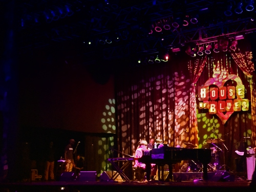

Dr. John at House Of Blues, Houston. 2017автор Кристина Колосова
 21 сентября 2017 года в хьюстонском House of Blues концерт давал именитый и титулованный новоорлеанец Dr. John, Малкольм Джон Ребеннэк младший. Увидеть Доктора Джона, услышать его психоделический ритм-энд-блюз - все это казалось мне буквально пределом мечтаний. В Новом Орлеане Мака практически не поймать, разве что на апрельском Джазовом фестивале, поэтому, когда хьюстонский филиал HOB анонсировал концерт полгода назад, я решила идти несмотря ни на что. А тут случилось, что за несколько дней до выступления я неожиданно выиграла два билета (впервые в жизни что-то выиграла в интернете!) - ну не чудо ли, дримс кам тру и т.д.?! Сегодня Доктор Джон будет выступать на остинском фестивале Utopia (для меня эта мечта оказалась сбывшейся днем раньше). Еще вчера я вместе с залом визжала от каждого хита, будь то Big Chief или Right Place Wrong Time, а сегодня картинки и впечатления о концерте, столь ожидаемом мной, растворяются в дымке, точно как вчера Мак встал из-за фортепиано, и, опираясь на трость, пошел, пританцовывая, пока не исчез в музыке его The Gris-Gris Krewe. Вообще-то Доктор Джон очень даже реальный дедушка 76-и лет, он записывает музыкальные видеообращения к поклонникам из гостиной своего дома, выкладывает записи в Instagram, фотографируется с фанатами в доме-музее Профессора Лонгхэйра и после выступлений на Джазовом фестивале и с трудом ходит, опираясь на трость, которая, правда, больше похожа на магический посох из вуду-арсенала Shadow Man, главного злодея в чудесной диснеевской мультяшке про Новый Орлеан (Доктор Джон записал заглавную тему "Down in New Orleans" для "Принцессы и Лягушки"). Такси остановилось где-то на задворках House of Blues, так что на пути к парадному входу мы споткнулись об автомобиль, дверца открылась, сперва показалась резная трость, а за ней уже появился и Мак Ребеннэк, осторожно выбираясь с переднего сиденья. Вот просто так - в просторной голубой рубахе, с заплетенными в один дредлок седыми волосами, аккуратной бородой. Казалось, что ты невольно стал зрителем некоего таинства - Музыкант входит в клуб. В голове: "Да это же Доктор Джон! Вот это да! Интересно, в каком костюме он будет выступать сегодня, вряд ли в этой рубашке… Вот бы сейчас попросить автограф или о совместном фото! Но я стесняюсь. Лучше не мешать сейчас…", - и у самой улыбка до ушей. Концерт Доктора Джона предваряло выступление симпатичного фолк-бэнда, названия которого я не запомнила. Со стены подмигивала Бесси Смит (картины в кабаке висят что надо!), мол, сейчас начнется! За опущенным занавесом двигают инструменты, быстрый саундчек, вот и клавишные зазвучали. Купленный в баре виски потихоньку пьется, глаза широко открыты. Начинается! Открывается занавес, бэнд на сцене, из музыки появляется Доктор Джон. На нем яркий фиолетовый костюм, лихая шляпа, отсвечивающая золотом под софитами, неизменные темные очки, в руках по вуду-трости. Последние десятилетия Доктор Джон гораздо более сдержан в своем сценическом образе, эпоха пышных головных уборов из перьев и прочей вуду-атрибутики типа змей, ящериц, скорпионов, птичьих конечностей канула в Миссисипи вместе с героиновыми восьмидесятыми, однако на крышке рояля можно было разглядеть пару будто бы человеческих черепов… Мак садится за фортепиано и начинает играть The Monkey, ритм-энд-блюзовый хит авторства Дэйва Бартоломью, одного из самых продуктивных композиторов эпохи расцвета New Orleans R&B. "The Monkey speaks his mind" Далее "Iko Iko" - одна из визитных карточек Нового Орлеана (популярнее разве что "When the Saints Go Marching In"). Песня про типичные разборки Марди Гра Индейцев из разных племен. Над разгадкой происхождения известной фразы из этой песни, впервые записанной в начале 50-х, "Jock-a-mo fee-no ai na-n?" бьются лингвисты, антропологи, музыковеды и музыканты из разных стран, но одна из версий гласит, что это крик, предупреждающий о том, что за глупые шутки тебе могут хорошенько надрать задницу. Доктор Джон вместе с кавером этой песни выдвигал и свою креольскую версию происхождения этой фразы, давно бывшей в обиходе Марди Гра Индейцев, выходящих на символические сражения в районе Claiborne Avenue. Впрочем, говорят, что смысл слов Доктора Джона зависит от того, как хочет трактовать их слушатель. Он ворожит. Сцена заполняется глубоким зеленым цветом. Свечение окутывает Ночного Путника в элегантном фиолетовом костюме, софиты отражают золотом (очень новоорлеанские цвета!). "They call me, Dr. John, The Night Tripper" "Gris Gris Gumbo Ya Ya" - вудуистское варево, заглавная песня с дебютного альбома Мака Ребеннэка, которое и превратило музыканта в Доктора Джона. Альбом записывался новоорлеанцами в далекой Калифорнии, и Мак не сразу примерил на себя образ вуду-жреца. Эстетика луизианской чертовщины весьма удачно совпала с кислотной калифорнийской психоделией. Музыкант выбрал имя сенегальского принца, колдуна, прибывшего в середине 19 столетия в Новый Орлеан с Гаити, известного как Dr. John Montaine. Он приторговывал амулетами gris gris и занимался колдовством. К слову, с вуду атрибутами Мак сталкивался с раннего детства - музыкант вспоминал как в свой первый ураган в Новом Орлеане его тётушка повесила специальный противоураганный gris gris на входную дверь дома, приговаривая, что эта штука должна их спасти. Правда, в тот же момент улицу перегородил поваленный ветром вековой дуб. На сцене совершалась магия. Последние 10 минут концерта я бы хотела пережить заново, но уже без телефона с включенной камерой в руке. Те, кто слышал песню "Big Chief", поймут меня - стоять спокойно на месте совершенно невозможно. Так звучит карнавал. Доктор Джон объявляет состав бэнда (уже в который раз я переслушиваю этот кусок записи, силясь разобрать имена музыкантов). Секундное молчание, Мак опускает руки на клавиши, и первые ноты мгновенно поднимают оставшихся сидеть на своих местах из присутствующих - люди танцуют, звучит "Such a Night". Доктор Джон завершает свой магический ритуал, осторожно встает из-за рояля, и опираясь на трость, медленно, пританцовывая, исчезает в звуках музыки, продолжающейся литься пока не опускается занавес. Конечно, песен было сыграно больше, оставшийся безымянным для меня трубач заслуживает отдельного упоминания, как, впрочем, и остальные музыканты, но мой рассказ и не претендует на звание рецензии, он о сбывшейся мечте. Словом, such a night! UPD: Нашлись имена музыкантов из The Gris Gris Krew - Roland Guerin, бас и вокал; Herlin Riley, ударные и вокал; Eric Struthers, гитара. Трубач по-прежнему остался безымянным. |